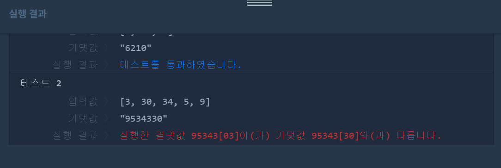
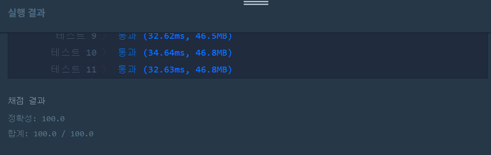

👀 문제
https://programmers.co.kr/learn/courses/30/lessons/42746
👊 첫 번째 도전
1. 설계
- int를 String형으로 변환한다.
- 배열에 넣고 내림차순한다.
- 그대로 이어붙여서 가장 큰 수를 리턴한다.
2. 구현
import java.util.Arrays;
import java.util.Comparator;
/**
*
* @author HEESOO
*
*/
class Solution {
public String solution(int[] numbers) {
String answer = "";
String[] array=new String[numbers.length];
for(int i=0;i<array.length;i++){
array[i]=String.valueOf(numbers[i]);
}
Arrays.sort(array, Comparator.reverseOrder());
for(int i=0;i<array.length;i++){
answer+=array[i];
}
return answer;
}
}
3. 결과
 실패. 정렬이 제대로 이루어지지 않았다.
4. 문제점
내림차순 array에 30 3순으로 들어갔다. “30”>”3”으로 비교했기 때문이다. 30과 3으로 숫자를 만들 때 303<330이므로 array에 3 30순으로 들어가야한다.
👊 두 번째 도전
1. 설계
- Comparator를 이용해 compare을 Override해서 사용한다.
- 정렬이 완료되면 순서대로 이어붙인다.
- answer이 0으로 시작하면 0으로만 이루어진 문자열이므로 “0”을 리턴한다.
2. 구현
import java.util.Arrays;
import java.util.Comparator;
/**
*
* @author HEESOO
*
*/
class Solution {
public String solution(int[] numbers) {
String answer = "";
String[] array=new String[numbers.length];
for(int i=0;i<array.length;i++){
array[i]=String.valueOf(numbers[i]);
}
Arrays.sort(array, new Comparator<String>(){
@Override
public int compare(String s1, String s2){
return (s2+s1).compareTo(s1+s2);//내림차순
}
});
for(int i=0;i<array.length;i++){
answer+=array[i];
}
if(answer.startsWith("0")){
answer="0";
}
return answer;
}
}
- String[] array: 파라미터 numbers를 String 형변환하여 저장한다.
public int compare(String s1, String s2): s1과 s2를 조합해 만들 수 있는 두 수를 비교해 큰 수가 왼쪽으로 가도록(우선순위가 높아지도록) 한다. 이 문제에서는 내림차순으로 정렬해야하므로 위와 같이 작성하였다. 오름차순일 경우 (s1+s2).compareTo(s2+s1)이다.- 예시) s1=9, s2=8
s1+s2=98, s2+s1=89 - return (s1+s2).compareTo(s2+s1)인 경우
“98”.compareTo(“89”) => 양수 => compare(9,8)이 양수를 리턴하므로 9(s1)가 뒤로 이동한다. - return (s2+s1).compareTo(s1+s2)인 경우
“89”.compoareTo(“98”) => 음수 => compare(9,8)이 음수를 리턴하므로 9(s1)가 앞으로 이동한다. - compareTo 함수: 비교 정렬할 때 사용한다. 숫자가 작을수록(음수일수록) 우선순위가 높아진다(왼쪽으로 간다).
| A.compareTo(B) | return |
|---|---|
| A<B | 음수 |
| A=B | 0 |
| A>B | 양수 |
3. 결과
 🤟 성공 🤟
👏 해결 완료!
Comparator가 아직 헷갈린다. 그래도 어려운 문제는 아니었다.
참고
- 헷갈리기 쉬운 “동등비교”와 “정렬” http://www.nextree.co.kr/p11101/